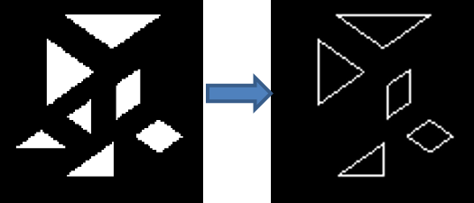
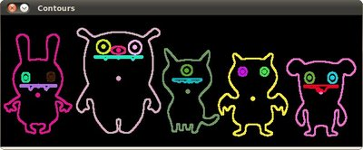
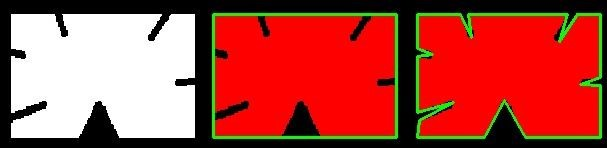

轮廓分析(上)
前两章我们学习了轮廓检测。那，轮廓有什么用呢？其实轮廓包含的信息很多，最明显的是它的尺寸大小、面积、周长等。我们能从中做很多不一样的用途，其中包括了识别筛选目标。下面介绍一些在轮廓分析上常用的功能，与一些例子。轮廓面积
近100%我们使用轮廓检测时会有“噪音”的存在，也就是在二进制后观察获得的蒙版你可以看到一些细细小小的白色小点或是在白色区域内有着细小的黑色空洞。使用我们之前学的形态运算、腐蚀和膨胀，我们能消除近大部分的“噪音”，但是并不能完全100%确定最后的蒙版是真的没“噪音”的。这就是轮廓面积分析起作用的时候了。我们能把面积太小的轮廓淘汰。换一个方面思考，如果必须识别出的物体有个尺寸大小限定，也就是说我们要检测出来的物体大小不是很小也不是很大。这时我们也能通过判断面积先把肯定是非目标的过滤掉。
double contourArea(InputArray<Point> & contour, ] bool oriented=false)
参数
contour —— 输入轮廓一般类为vector<Point>或Mat
orientated —— 定向区域标志。
如果为true，则函数将根据轮廓方向（顺时针或逆时针）返回带符号的区域值。
使用此功能，可以通过获取区域的符号来确定轮廓的方向。
默认情况下，该参数为false，表示返回绝对值。
例子
#include<opencv2/opencv.hpp>
using namespace cv;
using namespace std;
Mat src;
int minArea=100;
void callback(int,void*);
int main()
{
src = imread("units7.png",0);
resize(src,src,Size(100,100));
threshold(src,src,0,255,CV_THRESH_OTSU);
imshow("src",src);
namedWindow("select");
createTrackbar("minArea","select",&minArea,1000,callback);
callback(0,0);
waitKey();
return 0;
}
void callback(int,void*)
{
Mat img1(src.size(),CV_8U,Scalar(0));
vector<vector<Point> > contours;
findContours(src,contours,RETR_EXTERNAL,CHAIN_APPROX_SIMPLE);
for(int i=0;i<contours.size();i++)
if(contourArea(contours[i]) > minArea)
drawContours(img1,contours,i,Scalar(255));
imshow("img1",img1);
}

有些时候你可能需要用到周长。
轮廓周长
也称为弧长。可以使用arcLength()函数计算。第二个参数指定是否闭合轮廓，或让它只是个曲线(头尾不链接)。double arcLength(InputArray curve, bool closed )力矩(Moments)
Moments moments(InputArray array, bool binaryImage=false)
该函数计算矢量形状或栅格化形状的力矩，直到第三阶。
参数
array —— 2D点列(vector<Point>或vector<Point2f>，1×N或N×1)或
栅格图像（单通道，8位或浮点2D数组）。
binaryImage —— 默认false。如果为true，则所有非零图像像素均被视为1。该参数仅用于栅格图像
返回
Moments类型的力矩数据
例子
下面例子示范使用moments获取轮廓的重心点。#include <opencv2/opencv.hpp>
#include <iostream>
using namespace cv;
using namespace std;
Mat src_gray;
int thresh = 100;
RNG rng(12345);
void thresh_callback(int, void* );
int main() {
Mat src = imread("stuff.jpg");
cvtColor(src, src_gray, COLOR_BGR2GRAY);
blur(src_gray, src_gray, Size(3,3));
imshow("Source", src);
createTrackbar("Canny thresh:", "Source", &thresh, 255, thresh_callback);
thresh_callback(0, 0);
waitKey(0);
return 0;
}
void thresh_callback(int, void*) {
Mat canny_output;
Canny(src_gray, canny_output, thresh, thresh*2, 3);
vector<vector<Point> > contours;
findContours(canny_output, contours, RETR_TREE, CHAIN_APPROX_SIMPLE);
Mat drawing = Mat::zeros(canny_output.size(), CV_8UC3);
for(int i = 0; i < contours.size(); ++i) {
// 计算力矩
Moments mu = moments(contours[i]);
// 算出重心点mc
// 加上 1e-5 避免 division by zero
Point2f mc = Point2f(static_cast<float>(mu.m10 / (mu.m00 + 1e-5)),
static_cast<float>(mu.m01 / (mu.m00 + 1e-5)));
cout << "mc[" << i << "]=" << mc << endl;
// 显示轮廓和重心点
Scalar color = Scalar(rng.uniform(0,256), rng.uniform(0,256), rng.uniform(0,256));
drawContours(drawing, contours, i, color, 2);
circle(drawing, mc, 4, color, -1);
}
imshow("Contours", drawing);
}
我们也可以从moments中获取轮廓的面积：


...
double area = mu.m00;
...
注：由于轮廓矩是使用Green公式计算的，因此对于具有自相交的轮廓，你可能会得到看似奇怪的结果，例如：蝶形轮廓的面积（m00）为0。
轮廓近似
根据我们指定的精度，它可以将轮廓形状近似为顶点数量较少的其他形状。它是Douglas-Peucker算法 [维基百科]的实现。举例，假设你试图在图像中找到一个方形，但是由于图像中的某些问题(噪音等)，你没有得到一个完美的方形，而是一个“坏形状”（如下图所示）。现在，你可以使用此功能来近似形状。approxPolyDP第二个参数称为epsilon，是从轮廓到近似轮廓的最大可允许差距。它是一个精度参数。需要正确选择epsilon才能获得正确的输出。第三个参数指定曲线是否闭合。
void approxPolyDP(InputArray curve,
OutputArray approxCurve, double epsilon, bool closed)
参数
curve —— 存储在vector<Point>或Mat中的2D点的输入向量 approxCurve —— 输出近似结果。类型应与输入curve的类型一样。 epsilon —— 指定近似精度。这是原始曲线与其近似值之间的最大距离。 closed —— 如果为true，则近似曲线将闭合（第一个和最后一个顶点连接）。否则，它不会闭合。
例子
...
vector<Point> approx;
for (int i = 0; i < contours.size(); ++i)
{
//近似轮廓，精度与轮廓周长成正比
double perimeter = arcLength(contours[i], true);
double epsilon = perimeter*0.02;
approxPolyDP(contours[i], approx, epsilon, true);
...
}
...

左：原轮廓；中：epsilon为0.1*周长时；右：epsilon为0.01*周长时
凸包外观(Convex Hull)
凸包外观看起来与轮廓逼近相似，但并非如此（虽然在某些情况下两者可能提供相同的结果）。在这里，convexHull()函数检查曲线的凸度缺陷并对其进行校正。一般而言，凸曲线是始终凸出或至少平坦的曲线。如果是往内部凹的部分，则称为凸度缺陷。例如，观察下面的“手形”图像。红线显示手的凸包外观。双向箭头标记显示凸度缺陷，这是外观与轮廓的局部最大偏差。我在之后的文章会详细提到凸包外观。
void convexHull(InputArray points, OutputArray hull, ] bool clockwise=false, ] bool returnPoints=true)
参数
points —— 输入轮廓，vector<Point>或Mat。
hull —— 输出。
clockwise —— 方向标记。如果为true，则输出的凸包为顺时针方向。否则，其方向为逆时针方向。默认false。
returnPoints —— true：返回外观点的坐标。
false：则返回与外观点相对应的轮廓点的索引（凸包外观是从原来的轮廓选择出重要的顶点以淘汰凸度缺陷）。
默认true
points和hull必须是不同的数组，不支持就地处理取代。

轮廓分析(下)